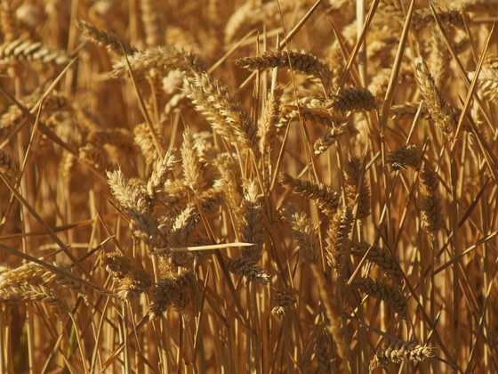
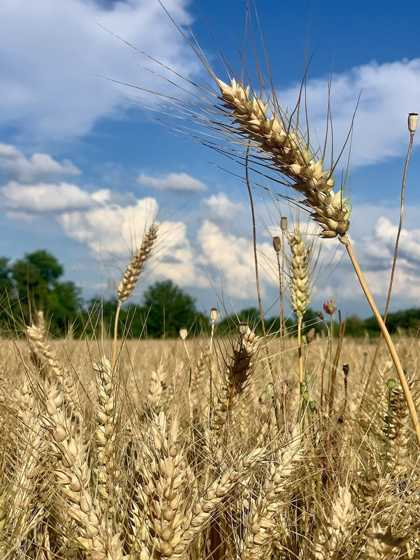
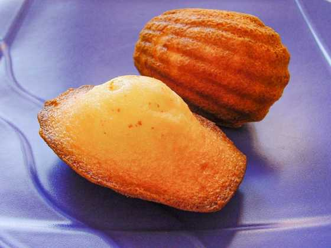
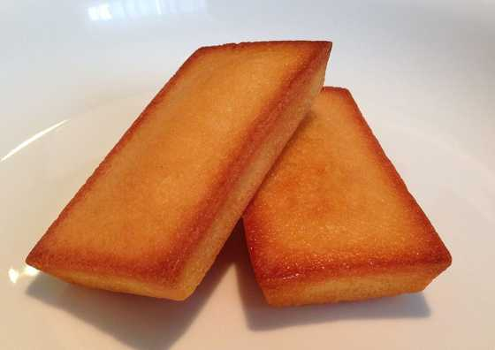

Instagramのプロフィールによると、宮崎県延岡市土々呂町にある「パンと洋菓子のお店」です。店名のとおり、パンと洋菓子の両方を扱うお店で、投稿ではクロワッサンやバゲットなどが紹介されているようです。
イートインもあり(プロフィール記載)、売り切れ次第終了とのこと。焼き上がりを楽しみに、気軽に立ち寄れる街のお店というのがこのページの軸です。
店名の意味や開業のきっかけ、オーナーさまの想いは確認できていません。お話をうかがえれば、このページに反映します。

パンと洋菓子のお店 / 宮崎県延岡市土々呂町
サクッと焼き上がるパンと、ほっとする洋菓子を、土々呂の街の一軒から。

ABOUT
Instagramのプロフィールによると、宮崎県延岡市土々呂町にある「パンと洋菓子のお店」です。店名のとおり、パンと洋菓子の両方を扱うお店で、投稿ではクロワッサンやバゲットなどが紹介されているようです。
イートインもあり(プロフィール記載)、売り切れ次第終了とのこと。焼き上がりを楽しみに、気軽に立ち寄れる街のお店というのがこのページの軸です。
店名の意味や開業のきっかけ、オーナーさまの想いは確認できていません。お話をうかがえれば、このページに反映します。



MENU
商品の内容・価格の詳細は準備中です。以下の写真はフリー素材のイメージで、お店の商品ではありません。
クロワッサン、バゲットなど(Instagram投稿より)。ラインナップは準備中
焼き菓子やケーキなど。ラインナップは準備中
14:00まで(Instagramプロフィール記載)。メニューは準備中






VOICE
焼きたてのクロワッサンの香りに誘われて、つい買いすぎました。
パンと一緒に焼き菓子も選べるので、手土産にもちょうどいいです。
イートインでひと休み。午前中のゆったりした時間が好きです。
上記は制作側が作成したイメージ例で、実在のお客さまの声ではありません。
ACCESS
| 住所 | 〒889-0513 宮崎県延岡市土々呂町5丁目2402-1 |
|---|---|
| 電話 | 準備中 |
| 営業時間 | 10:00〜16:00・売り切れ次第終了(Instagramプロフィール記載。変更の可能性あり) |
| 定休日 | 火曜・水曜(同上) |
| 価格 | 準備中 |
| @croissant.totoro |
写真はフリー素材のイメージで、店舗の実際の様子・商品ではありません。実際の写真はご提供いただいたものに差し替えます。